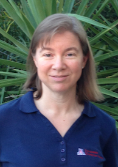

|  | Dr. Michelle Strout has been a professor in the Department of Computer Science at the University of Arizona since August 2015 and is the current acting department head. Prof. Strout's main research area is high performance computing and her research interests include compilers and run-time systems, scientific computing, and software engineering. She earned her Ph.D. at the University of California, San Diego in 2003 with Jeanne Ferrante and Larry Carter as co-advisors. In 2008, Michelle received a CAREER Award from the National Science Foundation for her research in parallelization techniques for irregular applications, such as molecular dynamics simulations. In 2010, she received a DOE Early Career award to fund her research in separating the specification of scientific computing applications from the specification of implementation details such as how to parallelize such computations. Some of Prof. Strout's research contributions include the Universal Occupancy Vector (UOV) for determining storage mappings for any legal schedule in a stencil computation, the Sparse Polyhedral Framework (SPF) for specifying inspector-executor loop transformations, dataflow analysis for MPI programs, parameterized and full versus partial tiling with the outset and insets, and loop chaining for scheduling across stencil loops. |